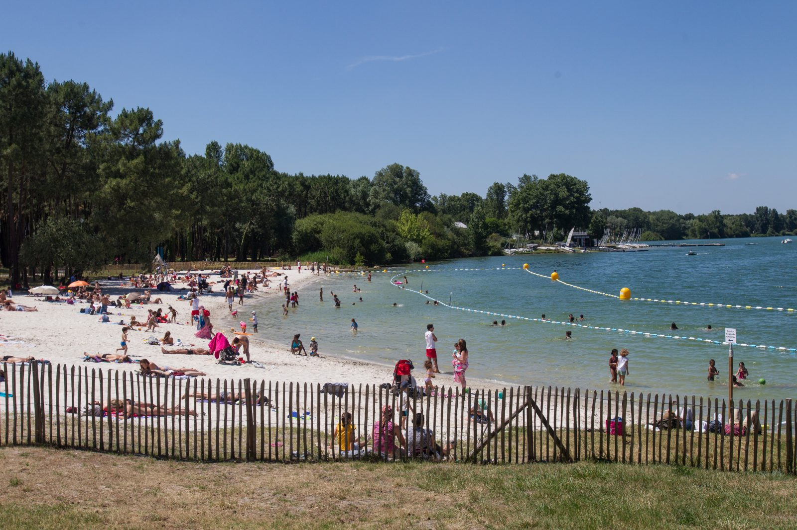

Le marathon est une distance à part. Mythique, exigeante, symbolique. C'est souvent un objectif de longue haleine, qui demande du temps, de l'engagement et une vraie préparation. En tant que coureuse du dimanche, courir mon premier marathon est déjà une aventure forte. Mais j'avais envie d'aller plus loin : transformer cette course en un moment de partage, et la rendre inoubliable en la vivant entourée de ceux qui comptent.
Pourquoi cette course ?


La course des copains, c'est avant tout une invitation. Une invitation à découvrir (ou redécouvrir) la course à pied, une passion qui m'a surprise ces dernières années, et à en partager un morceau, chacun à son rythme. L'idée est simple : permettre à chacun de se challenger à son niveau. Que vous couriez 7 km ou davantage, que vous soyez débutant ou habitué des baskets, l'objectif est le même : se dépasser, s'encourager, et créer ensemble un souvenir fort. Chaque participant peut s'inscrire sur la distance de son choix. L'ensemble des coureurs sera réparti sur la distance marathon afin que l'aventure soit collective, vivante, et portée tout au long du parcours par des énergies nouvelles.

La course se déroulera au cœur du lac de Bordeaux, sur une boucle de 7 km, idéale pour profiter de ravitaillements réguliers et de toilettes publiques. Des bénévoles à vélo seront également présents pour veiller au bon déroulement de l'événement. La course des copains, c'est un marathon… mais surtout une histoire de liens, de partage et de copains
Alors, prêt·e à tenter l'aventure ?